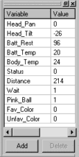

2.0
INSTALLING AIBNET
Download the Aibnet Installer to
your PC desktop.
Double click on the installer icon & follow the simple step-by-step
instructions.
|
3.0 MAKING
A CONNECTION
3.1 Connect to AIBO
| Click "Connect" from the toolbar, or Connect
menu.
In Host, type or select the name or IP address of your AIBO
(for
example, this could be 10.0.1.100). In Port,
select
"aibo". Click "OK" when ready. |
3.2 Disconnect from AIBO
| Click the toolbar "Detach" button, or from the Connect
menu, click "Disconnect" |
3.3 Quit Aibnet
| On the Connect menu, click "Exit". |
4.0
CAPTURING TEXT TO
A LOG FILE
4.1 Create a telnet log
| On the Terminal menu, click Start Logging (or
double
click on "LOG" in the statusbar). Specify the log file. If
the file already exists, it will be overwritten. |
4.2 To stop logging commands
| On the Terminal menu, click Stop
Logging (or double
click on "LOG" in the statusbar). |
5.0
TRANSFER RCODE TO/FROM
AIBO
5.1 Open an RCode or Behavior file
| On the RCode menu, click Open (or
click on Open in the
toolbar) and specify a filename. You can also drag-n-drop RCode
or
a Behavior file from an Explorer window into Aibnet to open.
Aibnet
will compile behavior files, or perform macro & syntax checks on
handwritten
RCode automatically. |
5.2 Write RCode to AIBO
| On the RCode menu, click Write (or
click on Write in
the toolbar). You must have a Behavior/RCode file open, and
a connection with AIBO established for this to work. Power cycle
AIBO to run with written RCode image.
To run new RCode without a power cycle, use Start
instead.
|
5.3 Read RCode from AIBO
| On the RCode menu, click Read (or
click on Read in the
toolbar). The RCode stored on the memory stick will be read
into memory in Aibnet. |
5.4 Compare RCode on AIBO
| To verify the RCode in Aibnet memory, and the RCode
stored on AIBO's
memstick are identical, click Compare from the RCode
menu (or
Compare in the toolbar). You must have an Behavior/RCode
file
open, and a connection with AIBO established for this to work. |
5.5 Delete RCode on AIBO
| To remove RCode from AIBO's memstick, from RCode
click Delete (or press toolbar Delete button). |
5.6 Start RCode Program on AIBO
| On the RCode menu, click Start (or
click Start in the
toolbar). If RCode isn't loaded into Aibnet, only a "RUN"
is
dispatched. However, if RCode -is- in Aibnet memory,
the file is first downloaded to AIBO prior to "RUN". Note: AIBO
will
echo the file back as it parses the input. For large downloads,
this
could take a few minutes.
To start AIBO without downloading the RCode in Aibnet
memory (for example,
if it has already been downloaded previously), type "RUN" in the
Command
Bar.
|
5.7 Stop RCode Program on AIBO
| On the RCode menu, click Stop (or
click Stop in the toolbar). |
6.0 UPLOAD
ACTIONS TO
AIBO
6.1 Select AIBO platform
From the RCode menu, choose Select AIBO
Platform, then
210 or 220 (whichever matches your AIBO). This must be correct
prior
to selecting Upload Actions, since it affects filenames & how
things
are compiled. The current AIBO model is also visible in the
status bar.
|
6.2 Compile & upload actions to AIBO
| From the RCode menu, choose Upload Actions
(or click
Actions in the toolbar). Aibnet will ask you to select an actions
directory. Select where your *.ACT files (and/or *.UAC
files)
are located, and click OK. Your actions are compiled &
uploaded to AIBO. See OdaBuild
for details. |
7.0 DEBUG
MODE, TRACING,
& PLAYBACK
In debug mode, Aibnet offers some
powerful debug capability for AIBO programming. Aibnet
records most everything AIBO does into a trace log -- program execution
(RCode or
Master Studio Behavior), variables, stack events, and camera
images. The various windows show a live display of
everything AIBO does.
If something goes wrong in your program (ie: a bug!!!), you can then
rewind the trace log and figure out step-by-step what happened.
|
|
(click for larger
image)
|
(click for larger
image) |
There are several windows available in debug mode. The
watch bar, camera bar, variable bar, call stack, and source viewer
(described in following sections).
The bottom of the source viewer contains a slider & a playback
control toolbar. You can rewind the recording, and view
detailed execution. All debug windows are updated in blue
when the trace log is used.
For debug mode to work, AIBO must be running a "debug-compile" from
ReCode or
BeCompile.
The debug-compile has all sorts of information added that enables
Aibnet tracing to function. Simply loading an RCode or
Behavior program while in debug mode creates the necessary
"debug-compile". Click the toolbar "Start" to
download the program to AIBO and start tracing!
Warning! Debug mode can more than
triple the size of your program. DogsLife as an extreme
case, is too large to run in debug mode whole (AIBO gets indigestion
trying to process it - I test DogsLife in smaller chunks these
days). However, virtually all other programs will have no
difficulty.
8.0 WATCH
BAR
The
watchbar literally allows watching of variables.
You specify the variables you want to watch. It works in
both normal & Aibnet debug modes. As your RCode or
Behavior program executes, the watchbar periodically polls AIBO to
get the current values. To avoid overloading AIBO, only
about
5 variables per second are updated.
Debug Mode: In debug mode, the watch bar
does not poll AIBO. Instead
it updates from the incoming tracing information (used by the variable
bar). The watch bar also supports trace playback mode,
always
showing what the variables were at a given point in time.
8.1 To toggle watchbar
| On the Debug menu, click "Watch Bar". |
8.2 To add a variable to watchbar
| With watchbar visible, click the "Add"
button. Type
in the new variable name where indicated. Note: the watchbar only
updates the 'Value' column when online with AIBO. |
8.3 To edit a variable name in watchbar
| Double-click on the variable which needs editing. |
8.4 To change a variable value from watchbar
| Double-click on the value which needs changing.
Aibnet will issue
a 'SET variable new_value' command to AIBO to update the variable. |
8.5 To delete a variable from the watchbar
| Click on the variable, and then click the "Delete"
button. |
9.0 CAMERA
BAR
The camerabar shows what AIBO sees through
its camera.
You control the polling rate (slow, normal, fast, and very
fast).
The faster the poll rate, the more of AIBO's CPU you consume.
Debug Mode: In debug mode, camera bar
records everything
camcorder style. This makes Aibnet great for debugging
anything
involving good paw-to-nose coordination. Soccer kicks are a
perfect
example (or self docking code...). |
|
9.1 To toggle camerabar
| On the Debug menu, click "Camera Bar".
Note: RCodePlus
1.91 (or newer) required to use the camerabar. RCodePlus
2.52 (or newer) is recommended if you haven't upgraded in a while. |
9.2 To change the camera update speed
| With the camera bar visible, on the Debug menu,
click "Camera
Options". Select "Fast", "Normal" or "Slow" update
speed.
Note: The camera burdens AIBO quite a lot (due to image
compression).
Slower camera updates are better, especially if running a personality
like
DogsLife.
If you select YUV encoding, a "Vert Fast" poll rate is
also available.
YUV encoding is faster, but there is some loss in image quality
(depending
on lighting conditions).
|
10.0
VARIABLE BAR
The
variable bar appears quite similar to the watch bar (except for the
missing add/delete buttons). However, the variable bar
shows -all- variables
as they change. The watchbar instead shows only those
variables -you- are interested in... an important
difference. You cannot manually add anything to
variable bar (its updated automatically by Aibnet).
Debug Mode:
The variable bar only works in debug mode. AIBO must also be
running a "debug-compile" from ReCode or BeCompile. The
debug-compile has all sorts of information added that enables Aibnet
tracing to function.
10.1 To toggle variable bar
| On the Debug menu, click "Variable Bar". |
10.2 To show all variables always (instead of only on
change)
| Right-click in variable bar, and select "Show All". |
10.3 Copy variables to the watch-bar
Aibnet supports click-n-drag copying from the
variable-bar to the
watch-bar. Pick the variable you are interested in, down
click and hold it. Now drag it into the watch-bar & release
the mouse button.
|
11.0 CALL
STACK
The call stack tracks the use
of the R-Code "CALL" statement.
Each time a CALL is made, AIBO pushes the return address into a
temporary storage (the stack). Later, when a RETURN (or
RET) statement is encountered, AIBO pops that return address from the
stack, and resumes R-Code after the CALL.
Aibnet tracks these pushes & pops, and displays the call
stack. It is easy to overlook a return statement, and eventually
cause the stack to overflow. The call stack makes it very
easy to spot such problems.
Debug Mode:
The call stack only works in debug mode. AIBO must also be
running a "debug-compile" from ReCode or BeCompile.
The debug-compile has all sorts of information added that enables
Aibnet tracing to function. |
|
11.1 To toggle call stack
| On the Debug menu, click "Call Stack Bar". |
11.2 View R-Code where stack push occurred
Left-Click on stack entry. Right-click in the
call stack window, and select "View Code".
|
12.0
SOURCE VIEWER
The source viewer displays the execution
of R-Code or Master Studio Behavior programs.
It also contains the playback control toolbar. The slider
is for quick and coarse movement. The buttons are for stepping
forward and backward through the trace log.
Debug Mode:
The source viewer only works in debug mode. AIBO must also
be running a "debug-compile" from ReCode or BeCompile.
The debug-compile has all sorts of information added that enables
Aibnet tracing to function.
|
|
12.1 To toggle source viewer
| On the Debug menu, click "Source Viewer". |
12.2 Move slider to cursor position
You can advance or rewind the current slider position
to an arbitrary program point.
- Left click on the line of interest (turns yellow).
- Right click in the source viewer
- Choose "Forward to cursor" or "Reverse to
cursor".
|
12.3 Zoom Behavior Box Size
You can change the size of behavior boxes in the source
viewer, making them bigger or smaller.
- Right click in the source viewer
- Select "Zoom", then the size (from 25% to 200% of
normal).
Zooming is not available with RCode text files. If you want a
larger or smaller font for RCode, see next section. |
12.4 Change Font Size in Source Viewer
From Edit menu, chose "Preferences",
then "Font & Colors". Click the "Source Viewer"
tab. Change value in the "Size" box.
|
12.5 Change Playback Speed
The keyboard "+" and "-"
(plus/minus) keys make playback run faster or slower.
You can also change Playback settings from the preferences dialog.
|
12.6 Setting Breakpoints
Aibnet supports setting breakpoints -- markers that can
stop
playback. For example, if you know an bug is near a certain
point, set a breakpoint there. Start playback & Aibnet
advances the slider position until the breakpoint is
encountered. RCode or Behavior blocks marked as breakpoints
are drawn with a red background.
To toggle a breakpoint:
- Left click on the line of interest (turns
yellow).
- Right click in the source viewer
- Choose "Breakpoint" (line turns red when
breakpoint enabled)
|
Breakpoints might not appear precisely where you
left-click. You cannot (for example) set a breakpoint on a blank
line or comment. Aibnet scans down for the first executable line
of RCode & places the breakpoint there instead.
Note: All breakpoints are reset whenever a new trace log is
started.
|
13.0
SPECIFY PREFERENCES
13.1 Change the font and colors in your console window
| On the Terminal menu, click Preferences.
Choose
"Font & Color" from the preference dialog list. |
13.2 Set options for cursor and toolbar appearance
| On the Terminal menu, click Preferences.
Choose
"Appearance" from the preference dialog list.
Cursor style and console controls:
- Cursor Style displays the cursor as an
underline, vertical bar,
or block.
- Cursor Blinking makes the cursor blink.
- Local Echo displays all keyboard
input.
Can also be toggled
by double clicking "ECHO" in the status bar.
- Output Linefeeds makes Aibnet output a
linefeed
after every carriage
return. Not normally needed with AIBO.
Toolbar controls are:
- Display Toolbar Text Labels toggles text in
the
toolbar.
- Show tool tips on toolbar buttons controls
if
tooltips appear if
mouse is paused over a button.
- Start button uploads RCode controls Aibnet
uploads the current RCode
file whenever the Start button is clicked. This is useful
when
debugging small programs. However, for large programs (like
DogsLife) it's much faster to write R-Code to AIBO's memstick and
reboot.
|
13.3 Set options for auto editing assist
On the Terminal menu, click Preferences.
Choose
"Edit" from the preference dialog list.
- Auto Copy Selection copies selected text
automatically into the
clipboard without needing to click "Copy" on the toolbar.
- Auto Reload RCode checks your RCode source
file
date/time stamp
whenever the Write or Start toolbar buttons are used.
Changes
are reloaded/checked/compiled as required.
- Start button updates RCode updates RCode on
AIBO whenever the Start
button is clicked.
Aibnet can either upload & run immediately (good for small
programs),
or write your RCode to the memstick and reboot AIBO. For
larger
programs (like DogsLife) it's MUCH faster to write the memstick and
reboot.
The following auto-edit options are:
- Upload and Run. Does a temporary
upload of RCode, and
immediately starts. Good for small programs.
These
uploads are not saved to the memstick, and lost when AIBO is turned off.
- Write RCode to Memory Stick and Restart.
The memory
stick is updated, and Aibnet tells AIBO to power cycle itself (turn
off,
and back on automatically). RCode starts running once AIBO has
rebooted.
The WLAN connection will be lost when AIBO shut's off and you will need
to reconnect.
|
13.4 Set how many lines are saved in the scroll back
buffer
| On the Terminal menu, click Preferences.
Choose
"Edit" from the preference dialog list.
In Buffer Size, type a number between 200 and
32000.
The scroll back buffer is a block of memory where lines are stored so
you
can review text displayed by the terminal.
|
13.5 Stop shell window from appearing when opening
RCode or
Behavior files
| On the Terminal menu, click Preferences.
Choose
"Helper Tools" from the preference dialog list.
Select "Hidden (unless error)" in the Tool Window
Operation mode
group.
Note: Aibnet continues compiling RCode and
behavior files --
but silently. The shell window -still-
appears
if an error occurs (so you know there is a problem).
|
14.0
What's New?
- Version 3.10 - Fixed compatibility with Windows 98
& 2000. XP Themes support was getting in the way.
|
- Version 3.01 - Fixed problem with ReCode generating
inaccurate line tracking information in debug mode.
|
- Version 3.0 - Support for ERS-7.
|
- Version 2.0 - New full debug tracing
facility. Aibnet
can record everything AIBO does, for later playback (just like a TiVo
--
but for AIBO). In debug mode, Aibnet displays a source
viewer,
variable window, and stack trace. The source viewer
contains
the trace toolbar, for rewinding captured playback data, single
stepping,
etc... Breakpoints are available. The source viewer
works with either Master Studio Behavior files, stand-alone hand
written
RCode, or enhanced RCode (as required by DogsLife).
|
- Version 1.40 - New OdaBuild
Action
compiler & added "Actions" toolbar button within Aibnet to call
OdaBuild,
then upload the results to AIBO.. Fully configure a memory
stick personality (RCode & Actions) with just two clicks from the
Aibnet
toolbar! Few cosmetic changes.
|
- Version 1.30 - CameraBar now supports for RCodePlus
2.50. Added
new
extended RCode compiler "ReCode"
to support easier coding (most valuable to experienced software
developers).
Various minor bug fixes (in particular, writing files to the memstick
after
being broken in v1.20). On the trivial note, there are
several
icon variations now. If you have Aibnet on your desktop, right
click,
chose "Properties", click "Change Icon", and pick a color matching your
AIBO.
|
|
{kind=link}
{kind=link}